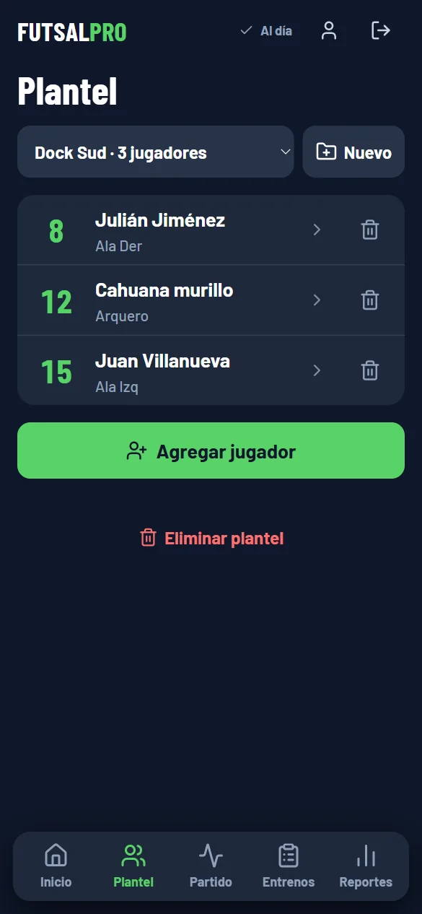
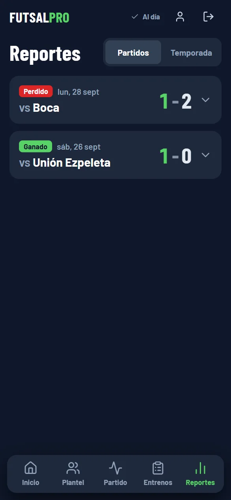
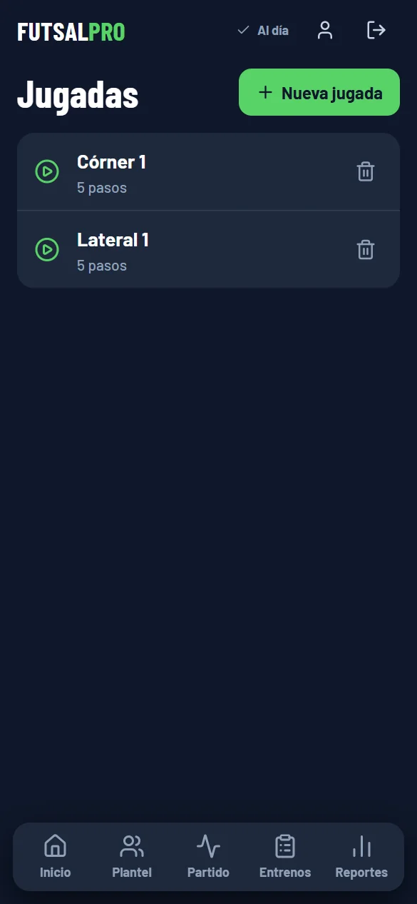

-

Plantel -

Reportes -

Jugadas
Futsal Pro
Una app para cargar lo que pasa en un partido de futsal mientras se juega. El DT arma el plantel, registra cada acción sobre el mapa de la cancha y después revisa las estadísticas.
- Registro de acciones en vivo sobre la cancha
- Pizarra táctica para armar jugadas
- Plantel, entrenamientos y asistencia
- Reportes de cada partido en PDF
- Guarda los datos en el dispositivo y los sincroniza con la nube
- React
- Vite
- Tailwind
- Zustand
- Supabase
- Dexie
- PWA
Para entrar hay que crear una cuenta gratis.